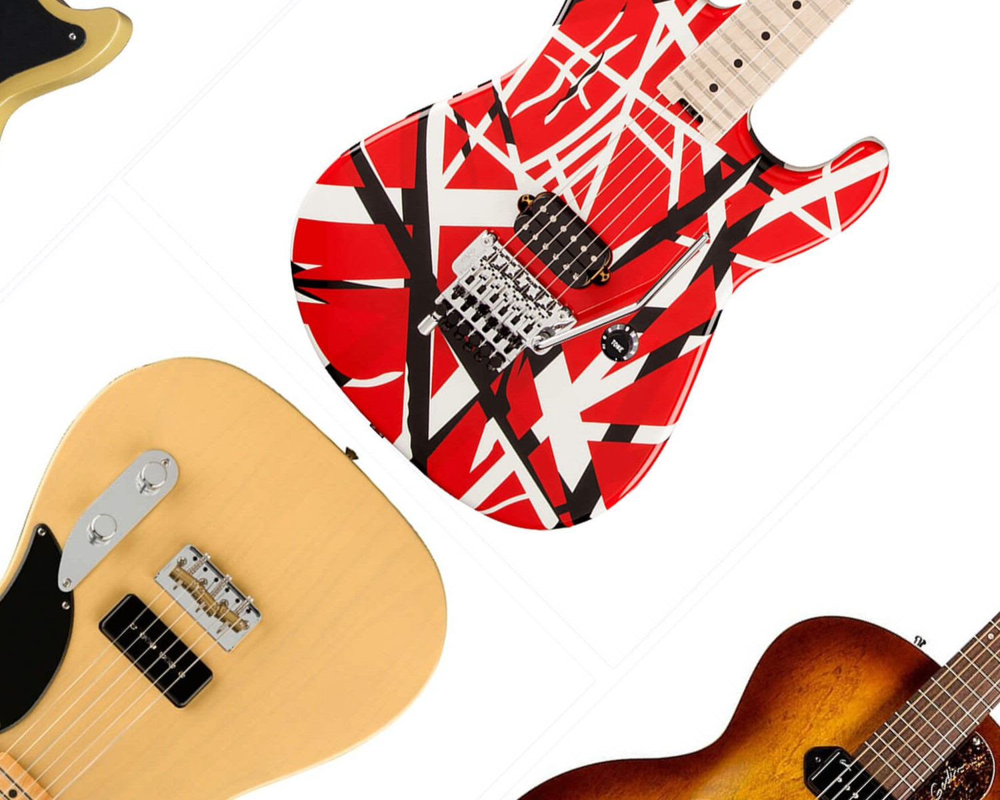
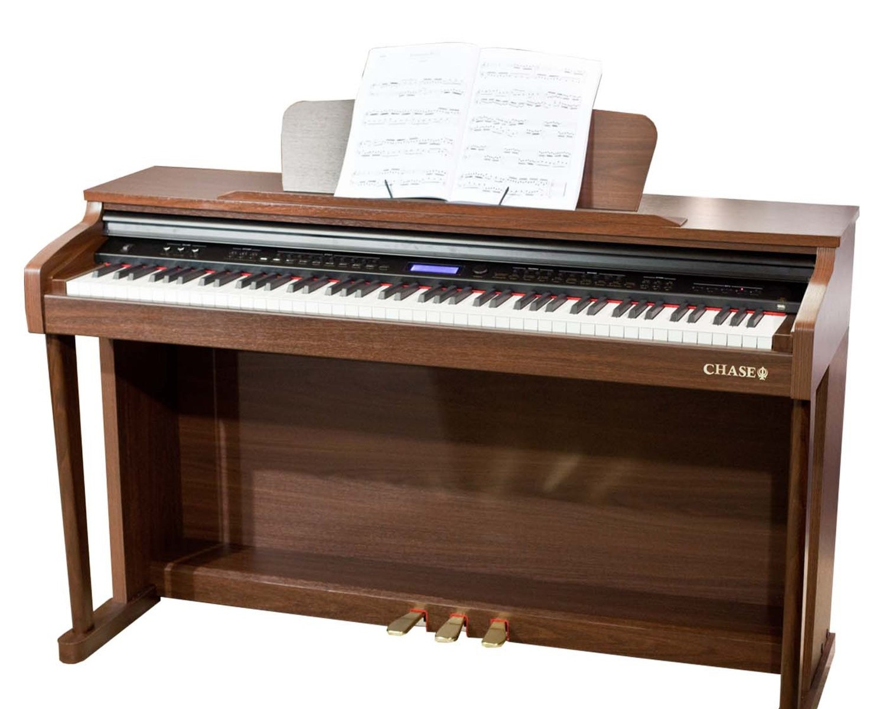

Muzikālās Prasmes
Ģitāras spēlēšana
Pamatinstruments. Ģitāru spēlēju ikdienā, gan elektrisko, gan klasisko. spēlēju jau kopš 8 gadu vecuma un labi pazīstu pašu instrumentu. Spēju izdzirdēt un saprast skaņu kā arī izdzirdēt tās melodiju no muzikālajiem skaņdarbiem. Ļoti laba ritma izjūta. Spēju improvizēt pie jebkuras melodijas un veidot savu mūziku.
Klavieru spēlēšana
Papildinstruments. Instrumentu spēlēju vēl mūzikas skolā. Pietiekami labi izprotu notis, laba abu roku koordinācija. Spēju piešķirt savu interpretāciju mūzikai. Laba ritma izjūta palīdz abu instrumentu spēlē. Labi zināma mūzikas teorija, viegli pielietojama praktikā.
Intereses
Mūzika
Viena no manām interesēm, protams ir mūzika. nodarbojos ar to jau sen un patīk man visi žanri. spēlēju gan ģitāru, gan klavieres. Bieži to klausos un ļoti patīk iet uz koncertiem.

Māksla
Māksla iet kopā ar mūziku, jo abi ir mākslas veidi. Patīk man gleznot ar akrila un akvareļa krāsām, kā arī vienkārši zīmēt ar zīmuļiem. Katru nedēļu trešdienās apmeklēju mākslas studiju.

Programmēšana
Kopš ceturtās klases man interesēja programmēšana. To arī vēlos studēt nakotnē kā galveno profesiju. Šis man ir gan kā priekšmets, gan kā hobijs. Kādu laiku atpakaļ arī biju apmeklējusi Lekciju par mākslīgo intelektu.

Matemātika
Viens no maniem mīļākajiem priekšmetiem. Man ļoti patīk ko jaunu uzzināt par to, kā darbojas matemātika, kā veidojas formulas un citas foršas matemātiskās zināšanas.